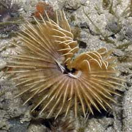
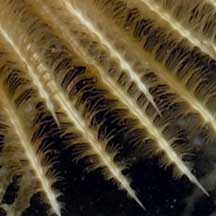
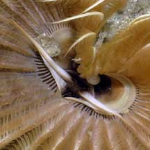
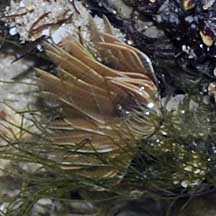
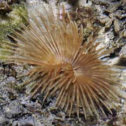

|
|
| worms text index | photo index |
| Orange
fanworm awaiting identification* Family Sabellidae updated Oct 2016 Where seen? This orange fanworm is commonly encountered on our Northern shores, and sometimes also on our Southern shores. Usually in dead coral or coral rubble and seldom in living corals. It is not as commonly encountered as the banded fanworms which are usually found in living corals. Features: Fan 4-6cm in diameter. The fan is orange or yellowish, sometimes with portions that are paler or white. Some have white bands and might be a paler version of the banded fanworms. Usually found alone, rarely a few next to one another. |
 Pulau Sekudu, Jul 07 |
 |
 |
*Species are difficult to positively identify without close examination.
On this website, they are grouped by external features for convenience of display.
| Orange fanworms on Singapore shores |
On wildsingapore
flickr
|
 Terumbu Salu, Jan 10 |
 Pulau Salu, Jun 10 |
| non-fluorescing orange fan worm @ sekudu - Oct2011 from SgBeachBum on Vimeo. |